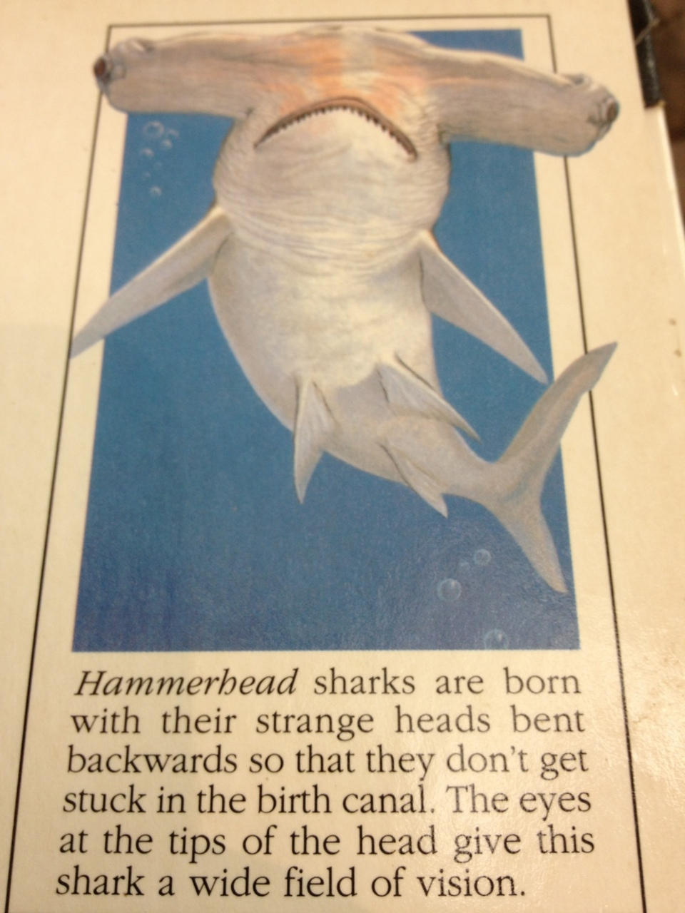
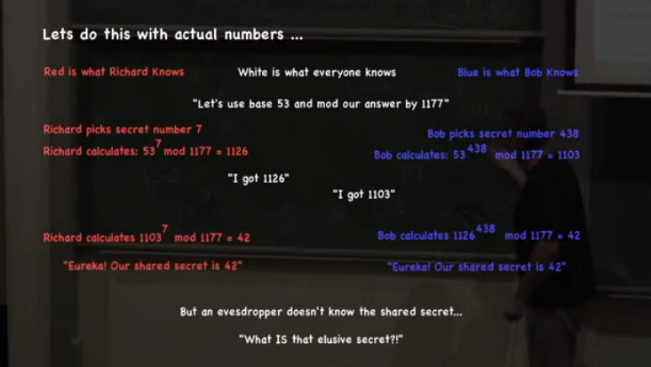

Know my erlang module (3): yecc
yecc: LALR-1 Parser Generator
yecc: LALR-1 Parser Generator
File error: Cannot open load file, avltree
It means I am missing the elib library.
However according to GNU, eLib is decommissioned. The old link to eLib 1.0 on JDEE is pointing to a non-existent location
It turns out it is because the default emacs in OSX is of version 22. Any version less than 23 will try to invoke the old avltree in elib.
Use brew to install the latest version of emacs
The Erlang Token Scanner

I always thought sharks lay eggs. Obviously there is exception. For example, Hammerhead is viviparous.

From 34: Numerical Algorithms (part 1) @28:43
Upgraded VirtualBox to 4.1.8r75467. When I start a vm I got an error message
$ VBoxManage startvm 7b2a72e2-08cd-483b-b594-fe27dff6974a --type headless Waiting for VM "7b2a72e2-08cd-483b-b594-fe27dff6974a" to power on... VBoxManage: error: No error info VBoxManage: error: Details: code NS_ERROR_CALL_FAILED (0x800706be), component ProgressProxy, interface IProgress, callee
Michael Gazzaniga - Free Yet Determined and Constrained (Michael Gazzaniga)
Trying to build LibreOffice on osx. Encountered this error message:
checking for Mozilla sources... checking for a169ab152209200a7bad29a275cb0333-seamonkey-1.1.14.source.tar.gz... will be fetched checking for MOZLIBREQ... configure: error: libIDL 0.6.3 or newer is needed to build Mozilla with Mac toolkit.
Python 3.3 build missing package
Python build finished, but the necessary bits to build these modules were not found: _lzma ossaudiodev readline spwd
It is a follow-up on this post.
Turns out this problem has been reported to python bug database: http://bugs.python.org/issue13241.
The llvm gcc compiler that comes with XCode 4.x is causing the problem.
Do
CC=gcc-4.2; ./configurewill fix the issue.
$ gcc-4.2 i686-apple-darwin11-gcc-4.2.1: no input files $ gcc i686-apple-darwin11-llvm-gcc-4.2: no input files
The first character of a Chinese’s name is the surname. It belongs to the family. The second character is to indicate the seniority within the family or clan. The third character is, finally, the name. This is the name given by the father at birth. It is also known as ‘Major Name’ (大名)
That is why there is this old saying in Cantonese, “What is your Privileged Surname and Major Name?”
Major Name is not to be used causally. In one’s childhood, nickname is used among family members and relatives. For example, Little B, Nu-nu, Tiny Mozzie, Big Head Boy etc.
When one starts to go to school, he will acquire a Name for Instructor (訓名) or Study Name ( 學名). This name is for used by the teachers.
Upon becoming a grown-up, one is then allowed to assign himself an Alternative Name (字) . To indicate one’s ambition or belief, one can also pick a combination of characters as Sign (號).
Only family members of more senior ranking can call someone by their Major Name. Everyone else must use the Alternative Name; not even the Emperor is exempted from this rule.
Among friends and peers, only Alternative Name is used.
Since female is normally not considered as an ‘individual’, they do not have any Major Name. They will only have nicknames.
In a marriage a female will only be known in the format of, for example, ‘Wong Door Li Clan’ (Wong the surname of the family of the husband side; Li the surname of wife’s family). She shall remain nameless literally.
Mencius’s mother is only known as ‘Mencius’s Mum’ or 仉氏. For a mother as great as her, her name was not kept at all in any history books.
Translated from this text:
中國人的名字，第一個字是姓，屬於家族的；第二個字是輩分；第三個字才是自己的名，這還是出世後由父親命名的「大名」。到今天，粵語還有句話：請教高姓大名。「大名」不能隨便說，孩童時，親人之間多用乳名──B仔、囡囡，細蚊、大頭仔等等。入學起「訓名」（或稱「學名」），供老師稱呼。成年才可以起「字」，用以明志可以改個「號」。只有家族的長輩才可稱呼一個人的「名」，連皇帝也不能叫臣子的「名」，只叫其「字」，朋友間平輩論交，亦以「字」互相稱呼。女性不算是「個人」，故沒有「大名」，只有乳名。嫁了，只稱「黃門李氏」，依然沒有名。孟子的母親只叫孟母，仉氏。這樣偉大的母親，歷史竟沒有記載她的名字！
The contamination principle dictates that every nonlinear security commands time value, positive if the security is convex and negative if it is concave.
Nassim Taleb, Dynamic Hedging
I must have done something silly with the DYLD_LIBRARY_PATH. This is an error I got when running svn
$ svn info dyld: Library not loaded: /usr/lib/libpq.5.dylib Referenced from: /usr/bin/svn Reason: image not found Trace/BPT trap: 5Run it in a new shell and the problem goes away.
Just installed otx, an OSS implementation of otool
Just learn something new (to me) about bash:
1) Anonymous function
2) local (to subroutine) variable
$ ./python.exe -SE -m sysconfig --generate-posix-vars Fatal Python error: Py_Initialize: can't initialize sys standard streams Traceback (most recent call last): File "/Users/antkong/wd/python.project/cpython/Lib/io.py", line 60, inUpdate: solutionAbort trap: 6